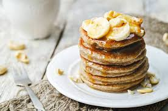

Banana Pancakes

Sweet and fluffy banana pancakes, quick and easy to make
Preperation Time
- Preparation Time: 5 minutes
- Cooking Time: 15 minutes
- Total Time: 15 minutes
Ingredients
- 1 ripe banana
- 2 eggs
- 1 tablespoon flour
- A pinch of cinnamon
- Butter or oil
Instructions
- In a bowl, mash the ripe banana until smooth.
-
Add the eggs, flour, and cinnamon to the mashed banana. Mix until well
combined.
-
Heat a non-stick skillet over medium heat and add a small amount of
butter or oil.
-
Pour small amounts of the batter onto the skillet to form pancakes. Cook
for 2-3 minutes on each side until golden brown.
-
Serve warm with your favorite toppings such as syrup, fresh fruit, or
whipped cream.
Nutrition
Calories: 220–250 kcal
Protein: 12–14 g
Carbohydrates: 25–30 g
Sugars: 12–14 g
Fat: 10–12 g
Fiber: 2–3 g